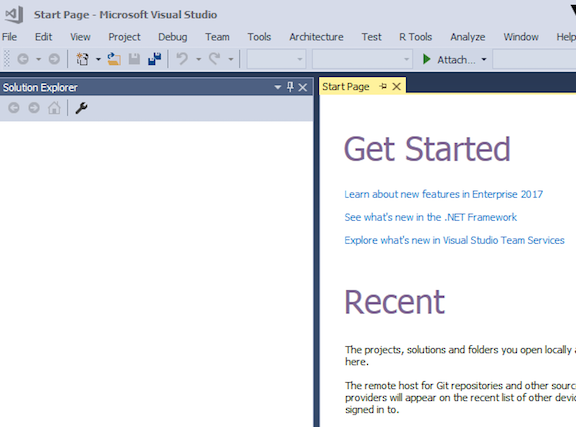
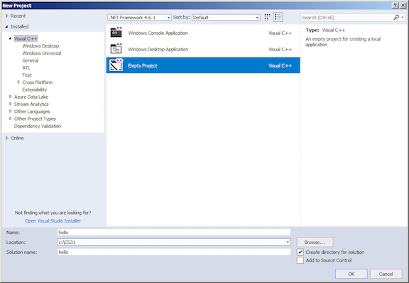
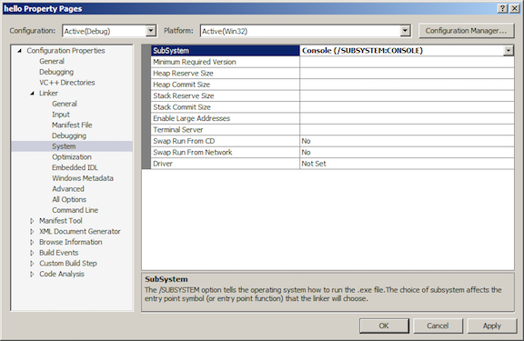
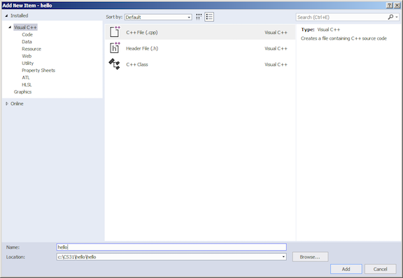

Microsoft Visual C++ 2017 is installed on the SEASnet lab machines and, by week 2, the SEASnet Terminal Server (which you can remotely access from any Windows or Mac computer with a high-speed Internet connection), so you don't have to install Visual Studio 2017 if you want to use it. (Before week 2, the SEASnet Terminal Server has Visual C++ 2015.)
(A naming note: Visual C++ 2017 is also known as Visual C++ 15.0; Visual C++ 2015 is also known as Visual C++ 14.0.)
If you would like to use Visual C++ 2017 on your own computer running Windows, you can download Visual Studio Community 2017 for free from Microsoft and install it. (As a student, you have free access to other Microsoft developer tools through their Imagine program.) Early on, you'll be presented with a window showing "Workloads". Be sure to check Desktop development with C++. Click Intall to continue.
Note that although you can install trial versions of Visual Studio Professional or Visual Studio Enterprise if you want to, using them for CS 31 or CS 32 would be like using a flamethrower to light a candle when a match would do.
Visual C++ is designed to support developers of large systems, so to use it as we will initially to write simple one-file programs may seem like overkill. However, over time you will come to appreciate some features (the debugger, especially).
Here is a way to set up a Visual C++ project to compile and run a simple one-file program. A number of these steps may have alternate ways to achieve the same end.
Start up the Visual C++ IDE (Integrated Development Environment). If you don't have a shortcut on the Desktop, then from the taskbar you'll probably select something like Start / All Programs / Visual Studio 2017 or Start / All Programs / Microsoft Visual Studio 2017. The first time you fire it up after installation, it may take a couple of minutes to get you to the start page. If it asks you to sign in, you may just click "Not now, maybe later" if you wish. If it says "Start with a familiar environment", for the Development Settings, select Visual C++ from the drop-down list. (If you're not offered Visual C++ as a choice but see other languages, you forgot to specify a custom installation when you installed Visual Studio Community.) Click the Start Visual Studio button.
From the menu, select File / New / Project...

In the New Project dialog, select Empty Project in the middle panel. In the text boxes below, enter for Name a project name, such as "hello". So that you can more easily find your projects later, you might want to change the Location to something like "C:\CS31" on your own machine, or "Z:\CS31" on a SEASnet machine. On a SEASnet machine, even if you don't use a simple location like "Z:\CS31", at least change the initial part of the location from "\\labsamba2.seas.ucla.edu\yourusername\" to "Z:\". In general, to make reading error messages easier in step 8, a short location like "C:\CS31" or "Z:\CS31" is better than a long one like "\\labsamba2.seas.ucla.edu\yourusername\my documents\visual studio 2017\projects", and a short project name like "hello" or "P1" is better than a long one like "example CS31 project".
Click OK. (If you're on a SEASnet machine you may then see a dialog saying "The Project location is not fully trusted by the CLR runtime." It's harmless to click OK to dismiss it.)

Select Project / Properties. In the Property Pages dialog, in the left panel, select Configuration Properties / Linker / System. In the right panel, select SubSystem, and in the drop down list to its right, Console (/SUBSYSTEM:CONSOLE). Click OK.

Select Project / Add New Item... In the Add New Item dialog, select C++ File (.cpp) in the middle panel. Enter a source file name, such as "hello", in the Name text box below. Click Add.

Edit the hello.cpp file in the window that appears. Type in a program like
#include <iostream>
using namespace std;
int main()
{
cout << "Hey, this really works!" << endl;
}
From the Debug menu, select Start Without Debugging. This will save your source file, compile it, and run the resulting executable if there were no build errors. (If you select Start Debugging, or if you forgot to do step 4, or if you launch your program by finding and double-clicking on the .exe file, your console window screen will disappear as soon as your program finishes executing, which you don't want.)
If you see a dialog box that says "This project is out of date: ... Would you like to build it?", check the "Do not show this dialog again" checkbox before clicking Yes.
If your program has any compile-time or link errors, a dialog box will appear telling you there were build errors. Check the "Do not show this dialog again" checkbox before clicking No, you don't want to continue. The Output window below your source file will list the errors. Double-click the first error message to see what it's referring to in your code. Fix the error. You can click on and fix other errors as well, but be aware that sometimes one mistake produces multiple error messages, so your first fix may resolve those problems as well. Go back to step 7.
If your program runs, its output will appear in a new console window that pops up. When your program finishes, that console window will display the text
Press any key to continue . . .
Press any key to dismiss the console window.